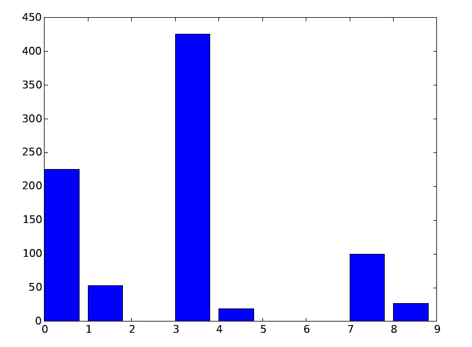

1、介绍
从上海实习回来之前的几天在想回学校这段时间做什么，虽说回去是要歇段时间但是如果一点代码不写也确实不舒服，加上这段时间对Python非常感兴趣，在公司的写了一些Python代码，但是不过瘾，觉得自己还欠缺很多，不妨就用Python写个项目吧，说干就干。
曾经一个同事跟我说，“听说你写过几十万行代码”，当时我听到就吓尿了，问他听谁说的，虽说在写过几个项目但是也不至于这么多啊，我自己都不相信。突然就想到怎么知道自己写了多少代码了呢？是的，很简单
find . * | xargs wc -l
最后的结果确实是最终的代码行数，不过并不能很好的展示出写代码的过程和分类，写的时间是什么时候，是什么语言，有效代码是多少啊，注释算不算啊，哪种语言写的最多。。。这些都不清楚，而且最重要的是不直观。OK,问题出来了，需求也有了。然后就立马回去建立了git库——Codeeye! 回来的这两周每天抽空写点，现在基本功能完成(可是代码还是一样的烂)，有任何建议和批评菜鸟都接受哟！。
2、Codeeye特性介绍
3、主要实现技术和实现过程
主要使用json文件作为中间数据交换，扫描给定目录下所有文件，自动忽略无关文件(例如.git或者版本控制信息文件等)；扫描所有文件，对于有效文件调用统计函数扫描文件代码，记录下文件修改日期等属性和代码行数、注释行数以及空行数，记录在json文件和扫描日志文件中；完成后开始数据统计，针对不同数据建立不同的统计模型，得到需要的数据格式，最后调用对应的使用Matplotlib实现的图表API生成统计图表。
4、Codeeye项目目录
Codeeye：GitHub托管地址https://github.com/wgliang/Codeeye
|--Codeeye |--conf |--codeeye.json Json文件 |--topo.txt 扫描日志 |--src |--codeeye.py 主函数 |--features.py 文件扫描 |--jsonconf.py Json读写 |--oper.py 统计操作APIs |--producer.py 图表生成 |--sorts.py 排序 |--templates.py 图表模板 |--res 结果 |--test 测试
5、使用
Python环境搭建完成后，命令行输入python codeeye.py -p [绝对目录路径]
结果示例：
代码行数统计(按语言类型)
代码量比例统计(按语言类型)
上周代码走势(按天)